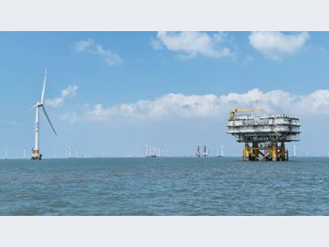
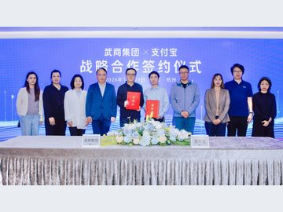

01
人大常委会丨报告提出我国金融工作下一步5方面考虑
新华社北京11月3日电（记者吴雨）国务院关于金融工作情况的报告11月3日提请十四届全国人大常委会第二十五次会议审议。

新华社北京11月3日电（记者吴雨）国务院关于金融工作情况的报告11月3日提请十四届全国人大常委会第二十五次会议审议。
据新华社，十四届全国人大常委会第二十五次会议3日上午在北京人民大会堂举行第二次全体会议。赵乐际委员长出席。会议听取了中国人民银行行长潘功胜受
“克服耐心资本供给不足问题”“健全多层次金融服务体系，壮大耐心资本”“优化科技金融服务，积极培育耐心资本”……近年来…

“坚持智能化、绿色化、融合化发展方向，加快构建以先进制造业为骨干的现代化产业体系。”今年9月召开的全国先进制造业大会对做大做强先进制造业作出系统部署…
从营业收入、归母净利润两项关键指标来看，国有六大行前三季度均实现同比正增长，经营效益稳中有进。

本报讯 记者侯悦林 王姝佩报道 近日，比亚迪电池循环经济产业园项目暨辽宁中润汇新材料科技产业园（一期）项目签约仪式在营口市鲅鱼圈区举行。

为深入落实辽宁省工信厅“辽工贷”专项工作部署，持续引金融活水浇灌实体经济，助力工业企业纾困解难、提质增效、转型升级，近日…
新华社北京11月2日电 记者2日从中国铁建股份有限公司获悉，随着“金石号”硬岩隧道掘进机（TBM）顺利始发，由中国铁建大桥局承建的辽宁鞍山大孤山综合运输廊道…

“从7月17日开工建设，到现在也就3个多月。目前，地上建筑已建完4层，计划今年主体结构全面封顶。

财联社11月3日讯（编辑 杨斌）今日债市延续强势，在上周五剧烈调整后，长端利率仅用两日回到了调整前的位置，10年国债再临1.60%关口。
多家机构认为，隔夜逆回购常态化操作有望进一步平抑资金波动，为11月资金面提供支撑。资金面有望维持均衡偏松，同业存单利率也存在进一步下探的可能。